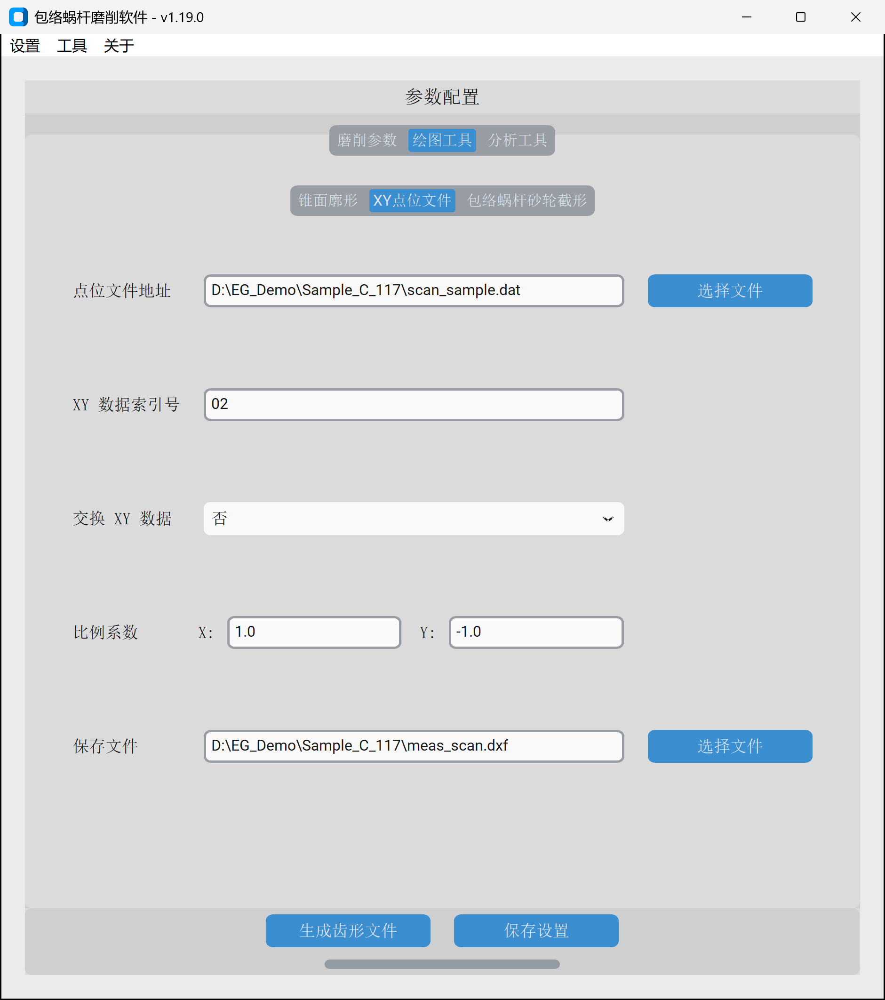
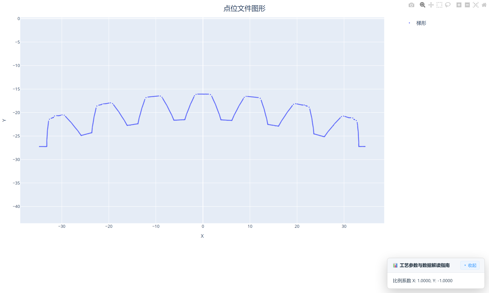

3.2 XY点位文件
XY点位文件 用于将三坐标测量机（CMM）、轮廓仪导出的 .txt / .dat 文本坐标批量转换为标准 .dxf 曲线和交互预览 .html，常用于实测蜗杆轴向截面轮廓还原与后续误差分析。

一、参数逐项说明
1. 点位文件地址
- 点击
选择文件时，软件先弹出选择类型询问框：- 选 “是”：选择单个
.txt或.dat点位文件； - 选 “否”：选择一个文件夹，自动合并读取目录下全部
.dat文件。
- 选 “是”：选择单个
- 自动过滤非坐标行：若文件开头包含
$ELE (...)、表头说明或分隔线，软件会自动识别跳过，只解析有效数值列。
2. XY 数据索引号
- 默认值：
01（0~99两位数字） ｜ 示例值（实测扫描数据）：02 - 含义：指定每行被分隔符（逗号、空格、制表符等）拆开后，哪两列分别作为
X和Y坐标（从0开始编号）。 - 实测示例：扫描数据每行格式如下（第
0列为轴向位置X，第1列为Y跳动，第2列为径向高度Z），因此填写02即提取第0列与第2列：
$ELE (NAM=扫描1, TYP=APT, FLD=(X,Y,Z,U,V,W,A)
-34.735731,0.000192,27.235942,0.018324,0.000000,0.999832,0.000000
-34.531578,-0.000607,27.232300,0.010401,0.000000,0.999946,0.000000
...3. 交换 XY 数据
- 可选项：
否（默认） /是 - 含义：选择
是时将解析出的第一列作为Y、第二列作为X（等价于对调索引号两数字）。
4. 比例系数（X: / Y:）
- 默认值：
X: 1、Y: 1｜ 示例值：X: 1.0、Y: -1.0 - 含义：分别乘以所有点的
X与Y坐标。填入-1.0可一键完成轴镜像翻转（例如将探针向上扫描的外轮廓翻转为与砂轮/槽形一致的方向）。
5. 保存文件
- 指定输出
.dxf路径，软件会在该 DXF 中附加记录所使用的比例系数 X / Y文本注释，并在同目录生成同名.html交互图。
二、真实实测扫描数据转换效果
下图为使用真实测绘点云（共 606 个有效坐标点，索引 02，X=1.0, Y=-1.0）点击 生成齿形文件 后生成的交互图表（右下角卡片自动展示比例系数）：
